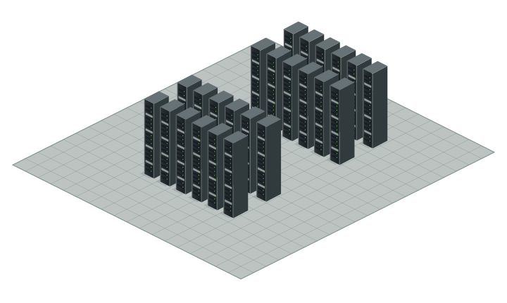

กำลังเตรียมพื้นที่สำรวจ
โหลดฉากและภาพอุปกรณ์
กำลังเปิดห้อง 3D…
ULTIMATE / INFRASTRUCTUREห้องจำลอง · ไม่มี Telemetry สด
Device Library
คลิกดูโมเดล 360° หรือลากลงหน้าตู้ Rack
การควบคุม
สำรวจพื้นที่: เลือกดูภาพรวมหรือเดินสำรวจ Datacenter, Device Library, สวน และโถงพระได้จากปุ่ม สำรวจพื้นที่
Museum: กด Device Museum → เลือกโซนหรือค้นหารุ่น · ไปจุดจัดแสดง / E เปิดโมเดล · Auto Tour พาชม · ปุ่ม Datacenter เดินกลับห้องเดิม
ภาพรวม: WASD เลื่อน · ลากหมุน · Scroll / Pinch ซูม
เดิน: WASD · Shift วิ่งตามความเร็วที่เลือก (1–20 เท่า) · กด Ctrl ค้างเพื่อย่อตัว · E ดูอุปกรณ์ · Esc ยกเลิกการจัดวาง · ปุ่ม ออก กลับภาพรวม
จัดวาง: ลากอุปกรณ์ที่ติดตั้งขึ้น/ลงเพื่อย้าย U · ลากจาก Library ลงหน้าตู้ · สีเขียววางได้ · เลือก U ด้วยตัวเลขได้ · Ctrl+Z ย้อนกลับ
มือถือ: แตะรุ่น → เลือกวาง → แตะหน้าตู้ หรือระบุ U แล้วกดวาง
การจัดวางบันทึกในเครื่องนี้
DRONE PRESENTATION
กิจกรรมจำลอง · สุ่มเลข 00–99 เพื่อความบันเทิง
จอยสติกเดิน · ลากฉากเพื่อมองWASD เดิน · Ins นั่ง · H วิธีควบคุม
＋FIRST PERSON WASD / จอยสติก เดิน · Shift วิ่ง 1–20× · Ctrl ค้างย่อตัว · E ดูอุปกรณ์ · L เปิด Library · Space กระโดดซ้ำได้ · Ins นั่ง/ยืน · Scroll ซูม · ลากเมาส์มองรอบตัว · Esc ยกเลิก · H วิธีเดิน
ลากเพื่อเดิน · ปุ่มวิ่ง ×3 WASD / ลูกศร เลื่อนมุมมอง · ลากเพื่อหมุน · Scroll / Pinch / ＋ − ซูม